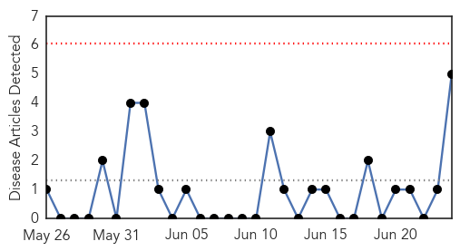
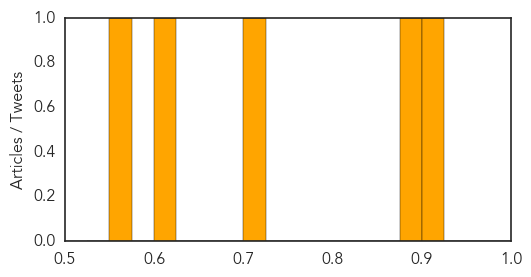

Pertussis
30-Day Web Trend
0 alerts, 0 warnings

30-Day Twitter Trend
0 alerts, 0 warnings

Article Locations

Article Confidences
Top Articles:
- 0.901
- Whooping Cough Vaccine May Not Prevent People From Becoming Healthy But Contagious Carriers
- 0.896
- Whooping cough resurgence due to vaccinated people not knowing they are infectious?
- 0.715
- Whooping cough resurgence may be due to vaccinated people
- 0.603
- Why delayed vaccination schedules are a bad idea
- 0.566
- Day-care vaccination rates in Michigan fall far below guidelines
Top Tweets:
-
No tweets found for Jun 24, 2015
Ebola
30-Day Web Trend
0 alerts, 0 warnings

30-Day Twitter Trend
0 alerts, 0 warnings

Article Locations

Article Confidences
Top Articles:
- 1.000
- Ebola epidemic was disaster for malaria control: study
- 1.000
- Ebola to blame for more malaria deaths in west Africa
- 1.000
- Ebola outbreaks in Senegal and Nigeria now under control, CDC says
- 1.000
- Some Ebola experts worry virus may spread more easily than assumed
- 1.000
- 8th person tested for Ebola in L.A. County is quarantined
- 1.000
- Ebola setback for Sierra Leone as capital records new cases
- 1.000
- Ebola scare ‘hampers malaria fight’ - Africa
- 1.000
- Ebola cases not slowing in Guinea, Sierra Leone
- 1.000
- Ebola cases not slowing in Guinea, Sierra Leone
- 1.000
- News Scan for Jun 24, 2015
- 1.000
- Ebola returns to Sierra Leone's capital: government
- 1.000
- Ebola setback for Sierra Leone as capital records new cases (Update)
- 1.000
- New Ebola cases in Sierra Leone
- 0.999
- Ebola setback for Sierra Leone as capital records new cases
- 0.999
- No plan to close borders
- 0.999
- Ebola Surfaces Again
- 0.999
- Ebola returns to Sierra Leone’s capital: government
- 0.999
- Thousands Of Guinea Malaria Cases Go Untreated Amid Ebola Fears
- 0.999
- Ebola-exposed patient arrives at Maryland clinic
- 0.999
- Ebola: Just When We Thought It Was Over, Another African Country Records 2 Fresh Cases
- 0.999
- ‘No Need to Close Border’: Liberia's Deputy Health Minister
- 0.999
- Malaria killed more people than usual in Ebola outbreak
- 0.999
- CDC: Ready for MERS Outbreak at Home
- 0.999
- Two new cases of Ebola in Sierra Leone crush hopes of virus' defeat
- 0.999
- Malaria killed more people than usual in Ebola outbreak
- 0.998
- Ebola reappears in Sierra Leone's capital after several weeks without new cases
- 0.998
- Fears that Ebola crisis will set back malaria fight
- 0.998
- Three Ebola virus variants identified in Guinea
- 0.998
- Ebola outbreak: New cases in Freetown, Sierra Leone
- 0.996
- Q/A: The search for Ebola vaccine in Uganda
- 0.996
- Dallas-area Africans confront Ebola fears
- 0.996
- Ebola cases not slowing in Guinea, Sierra Leone
- 0.995
- Flight attendants call for tougher Ebola screening
- 0.994
- Three Ebola virus variants identified in Guinea
- 0.993
- Liberia Watches Nervously as Ebola Spreads Near Border
- 0.993
- Sierra Leone Records New Cases Ebola
- 0.991
- Sierra Leone enforces curfew as Ebola virus resurfaces in north west
- 0.989
- Three new Ebola cases reported in Sierra Leone's capital
- 0.988
- Thomas Eric Duncan of Liberia dies of Ebola in Dallas
- 0.988
- Two Doctors in Ebola Fight Named Civil Servants of the Year
- 0.985
- New Ebola cases frustrate hopes of defeating the virus in Sierra Leone (w/video)
- 0.984
- Dallas hospital says Ebola patient denied being around sick people
- 0.977
- Sierra Leone reports 3 new cases of Ebola -
- 0.976
- Three new Ebola cases reported in Sierra Leone's capital - Xinhua
- 0.975
- June 24 news: ACA, malaria, MERS
- 0.973
- Effort to prevent panic over Ebola went too far
- 0.966
- MERS 'suspects' face fines if they don't cooperate
- 0.965
- Ebola epidemic in Guinea may be hurting malaria treatment
- 0.963
- A whisper of hope in Liberia's fight against Ebola deaths
- 0.955
- Sierra Leone Reports 3 Fresh Cases Of Ebola
Showing top 50 articles...
Top Tweets:
- 0.957
- Ebola cases reported in Guinea as people travel, worries increase with ... - U.S. News & World Report http://t.co/gTkdbrJaxA ebola EVD
- 0.957
- Ebola cases reported in Guinea as people travel, worries increase with ... - U.S. News & World Report http://t.co/LDpfVcKKEV ebola EVD
- 0.945
- 'It's penis Ebola' - anaesthetist caught verbally abusing sedated patient - TVNZ http://t.co/Sq2aqXTlN0 ebola EVD
- 0.940
- UN envoy on Ebola travels to Guinea Bissau after new cases reported in ... - UN News Centre http://t.co/q9H7zfG6DL ebola EVD
- 0.938
- Ebola may have caused spike in Guinea's malaria deaths - Al Jazeera America http://t.co/tx7tn7QR0R ebola EVD
- 0.921
- Thousands of Guinea malaria cases go untreated amid Ebola fears - The Guardian http://t.co/Ke6IdGnZ9E ebola EVD
- 0.911
- Effect of the Ebola-virus-disease epidemic on malaria case management in Guinea, 2014: http://t.co/EcNG7VaVsn (via)
- 0.870
- Sad Ebola news: Guinea & Sierra Leone had gone 2 months & 6 wks, respectively without healthcare worker infections. Last week there were 3.
- 0.862
- If Ebola Returns, Is Washington Or WHO Any Better Prepared? - Forbes http://t.co/x98KltlQL7 ebola EVD
- 0.838
- Ebola undermines health care. Stopping Ebola is key. Malaria services need to resume and expand. http://t.co/cWja8SCSNn
- 0.830
- Olivia Wilde Spotlights Ripple Effects of Ebola Crisis - ABC News http://t.co/K1HPDb62sI ebola EVD
- 0.814
- County reviews Ebola grant - Salina Journal http://t.co/CTKuGurEbk ebola EVD
- 0.809
- Olivia Wilde spotlights ripple effects of Ebola crisis - U-T San Diego http://t.co/9X1HIFvThk ebola EVD
- 0.705
- Worrying Ebola news: 50% of the 20 cases reported in the wk to June 21 weren't contacts of known cases. Translation: cases being missed 1/2
- 0.694
- Ebola cases reported in Guinea as people travel, worries increase with ... - U.S. News & World Report http://t.co/Tj0Cv0mxVY
- 0.690
- Thousands of Guinea malaria cases go untreated amid Ebola fears http://t.co/ClqlG76dP9
- 0.683
- Estimates of Outbreak Risk from New Introductions of Ebola with Immediate and Delayed Transmission Control http://t.co/KGJBEJiNaJ
- 0.652
- Ebola returns to Sierra Leone!! http://t.co/53xJuz3ElJ africaagainstebola
- 0.634
- Actress Olivia Wilde Says Ebola Crisis Is Far From Over - ABC News http://t.co/Sg7xqpmckB ebola EVD
- 0.632
- Ebola Communication Resources for West African Audiences | @cdcgov http://t.co/ld9Usyq4d2
- 0.599
- Failure to learn the lessons of the Ebola outbreak will have consequences on our health system http://t.co/7QEXDsEHig Africaagainstebola
- 0.574
- Liberia. Bushmeat trade roaring again despite Ebola ban http://t.co/uaybOZ2LF9
- 0.560
- FAO/WFP Crop and FoodSecurity Assessment Liberia, SierraLeone Guinea, 5 January 2015 ebola http://t.co/M5KNdQrsdo
- 0.557
- Ebola cases not slowing in Guinea and Sierra Leone http://t.co/5ipJFDU3Ns TackleEbola http://t.co/2Pl81rhaEy
- 0.508
- Médecins Sans Frontières - @MSF - awarded 2015 Chatham House prize for their Ebola response. Brave people. Bravo. https://t.co/Sg4eRsXVYH